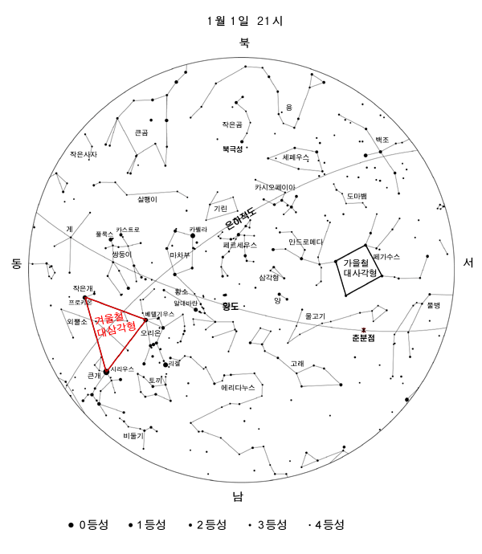

겨울철 밤하늘은 다른 계절보다도 유난히 별이 많으며 볼 것도 풍성하다. 안드로메다은하와 오리온성운 , 플레이아데스산개성단과 히야데스 산개성단 등 맨 눈으로도 볼 수 있는 은하와 성운 및 성단이 있는가 하면, 오리온자리의 베텔기우스, 리겔, 큰개자리의 시리우스, 작은개자리의 프로키온, 황소자리의 알데바란, 마차부자리의 카펠라 등 보석처럼 밝은 별들이 하늘을 가득 채우고 있다. 춥다는 사실만 제외하면 밤하늘도 맑아 별자리를 관측하기에는 가장 좋은 계절이다.
오리온자리의 베텔기우스와 큰개자리의 시리우스 및 작은개자리의 프로키온은 거대한 삼각형을 이루는데 겨울의 대삼각형으로 불리며 겨울철 별자리를 찾는데 길잡이 역할을 한다. 베텔기우스를 가운데에 놓고 큰개자리의 시리우스, 작은개자리의 프로키온, 오리온자리의 리겔, 황소자리의 알데바란, 마차부자리의 카펠라, 쌍둥이자리의 폴룩스를 연결하여 겨울철 대육각형이라 부르기도 한다.